MiSTiQ：将 Trellis 紧凑存储与 MX 低精度重构连接起来
MiSTiQ（MicroScaling Trellis Quantization for Extreme KV Cache Compression）由 Ofir Gordon、Lior Dikstein、Paul Balanca、Idan Achituve、Douglas Orr、Hai Victor Habi 合作完成，第一作者来自 Arm AI Research，合作机构为 Graphcore Research。论文于北京时间 2026 年 11 月 16 日 23:07 首次提交，当前按预印本阅读。论文入口：arXiv:2611.21216。原文表示将在接收后公开代码，本轮未核验到独立代码或项目页，也未复现实验。
上下文变长、同时服务的请求增多，都会扩大 KV 缓存及其内存访问。极低位宽向量量化又受显式码本大小约束，而把压缩缓存恢复到高精度浮点再做注意力，会限制低精度计算能够带来的收益。
1. 背景和问题
自回归模型需要为已经处理过的 token 保存 Key 和 Value。缓存大小不仅取决于模型的层数、KV 头数和单头维度，还随序列长度与并发请求数量增加。长文理解、RAG 和长链推理会扩大前者，提高服务并发又会扩大后者，因此即使权重保持不变，缓存也可能逐渐成为显存容量和带宽的重要消耗。论文同时提醒，解码不必永远是单纯的带宽瓶颈：在某些推测解码或较大批量设置下，计算同样可能占主要地位。这决定了缓存压缩不能只用一个理想化的内存访问模型来判断最终收益，存储格式、重构方式和注意力运算之间是否匹配，才是本文关注的链路。
已有方法大致从结构和后处理两端减轻压力。MQA、GQA、滑动窗口或局部与全局注意力改变缓存的组织方式；量化和 token 选择则试图适配已经训练好的模型。MiSTiQ 属于量化方向，主要目标是在不重新训练语言模型的条件下，用更少比特保存缓存，并让重构结果直接落入 microscaling，也就是 MX 可表示的低精度数值集合。它没有改变语言模型的层数、查询头或词表，也没有提出丢弃某些历史 token 的策略。读论文时需要保持这个对象边界：本文减少的是 KV 元素的表示成本，不能把结果表解释为权重、激活、运行时缓冲和整个进程都按相同比例缩小。
标量量化分别处理每个值，向量量化则让一个索引代表多个数，从而利用组内联合分布。在同样每元素位宽下，后者可以获得更好的空间覆盖，但显式码本遇到一个直接的问题：假设每步表示 V 个标量，每个标量使用 k 比特，那么不受结构限制的码本需要包含指数规模的条目。增加 V 有利于联合建模，同时也使码本存储和最近邻搜索更昂贵。对于需要在推理过程中持续写入的 KV，编码不能像离线权重量化那样无限增加搜索时间。论文借鉴为权重量化设计的 QTIP，但把精确 Viterbi 搜索改成保留有限候选的束搜索，试图控制在线缓存编码所需的工作量。
Trellis 可以理解为把一个高维重构向量拆成连续状态产生的若干小段。每个状态输出一个短向量，合法状态转移把这些输出串起来；整段编码选择一条累积误差较小的路径。这样可组合出的重构序列很多，却不需要为每个完整序列保存一个独立码字。更关键的是，状态之间以移位和追加少数比特相连，实际存储可以只保留分支标签及初始状态选择信息，而非保存所有完整状态。解码端再通过固定宽度的位窗口恢复各段状态。庞大的可选重构空间与实际必须保存的码本规模不再是同一个数量级，这是后续 MX 设计能够建立在紧凑存储之上的基础。
单纯换成 Trellis 仍没有解决计算格式的问题。MX 将一组低精度元素与一个共享尺度结合起来，点积可先在组内低精度累计，再处理尺度乘积。若先按普通浮点分布寻找路径，最后才把输出四舍五入到 MX 网格，路径搜索所优化的重构值与实际可计算的值就不一致。误差由“编码误差”和“转换到计算格式的误差”共同构成，前一步的最佳候选未必仍是后一步的最佳候选。MiSTiQ 因此把尺度和元素网格放入路径选择过程，而不是在编码结束后再附加一次格式转换。这比笼统地称作“低比特缓存”更精确：压缩代码和最终计算值是两种表示，设计目标是让它们在解码映射上保持一致。
另一处容易忽视的变化来自归一化本身。QTIP 的计算型映射以近似高斯分布为依据，然而一个高斯块除以由该块最大值决定的尺度后，单个归一化元素不再服从原来的标准高斯。尺度与元素共享同一块数据，两者并非相互独立。本文推导在给定已表示尺度时的边缘分布，再用条件逆累积分布构造重构值。这一步建立在源数据经过已有归一化和 Hadamard 处理后可近似高斯的假设上；它不是宣称任意模型、任意层、任意异常值分布都严格满足高斯模型。读者应该把“映射与假设分布匹配”和“真实 KV 分布已被完整解释”分开，后者仍然是作者在结论中希望继续放宽的条件。
另一个阅读重点是“替换量化器”与“替换量化方案”的差别。NSNQuant 先改变键值的分布，再由量化器编码，VecInfer 也有自己的平滑和旋转处理；本文把同一个新编码器放进这两条链路，并不意味着它们的输入已变成完全相同的统计对象。显式码本的适配方法、旋转发生的位置、尺度是否参与搜索都会影响后续误差。正因如此，研究一个可插拔模块时还需要保留它周围的协议，才能知道改善来自更大的重构空间、分布匹配，还是完整工作流中其他条件。本文的实验设计提供了这种拆分的起点，附录集成结果也让读者看到接口复用与效果复用之间仍有距离。
实验的意义也应按这一层次理解。WikiText-2 的困惑度衡量语言建模失真，LongBench 覆盖长上下文问答、摘要与分类，GSM8K 则把量化噪声放进较长的推理生成过程中。三者提供不同的质量切面，不是彼此可替代的指标。本文使用两款约八十亿参数模型，采用已有缓存量化工作流并替换其中的向量量化器，因此还可以观察换量化器的局部收益与整个预处理链路的配合关系。对推荐模型中的用户历史、内容理解或重排大模型，这种“从存储码到实际运算值”的思考很有参考价值，但要落到具体服务仍需重新测量写缓存开销、注意力内核、批量和上下文分布，不能只由离线精度表推出服务容量。 尺度开销尤其在极低位宽时不能忽略：同一组元素共用尺度是节省成本的来源，但块越小，需要保存的尺度越多；初始状态选择也会随路径长度摊销。这正是作者统一报告有效位宽，而没有只报告名义载荷位数的原因。
2. 方法
2.1 Trellis 上的束搜索编码与紧凑解码
先从 MX 的基本表达理解尺度的角色。一个向量被分成长度为 dmx 的块，每块使用一个正尺度，把原始值移到低精度元素可以表示的范围。尺度也必须量化，因此它与元素网格各自引入误差。原文式 1 写成：
符号解释：y 是待编码向量，I_b 是第 b 块的坐标集合，C_S 是元素格式的正范围常量，Q_\alpha 将尺度映射到可表示集合，Q_E 将归一化元素映射到低精度网格，带帽变量表示重构值。这个参考规则用块最大幅度选择初始尺度；若量化尺度为零，原文约定整块重构为零。尺度范围和精度都重要，较小的块也不必然更准确，因为其参考尺度可能落到尺度格式的不可表示区域。本文比较 UE8M0 与更细的 UE5M3，并把 NVFP4 的 E4M3 尺度设置纳入实验。Trellis 用 L 位状态表示局部重构选择，每一步输出 V 个标量，并追加 kV 个分支比特。输入长度为 T 时，一共走 T/V 步。原文式 2—3 给出合法转移与平方误差目标：
符号解释：u_t 为第 t 步状态，c_t 为追加分支标签，L 为状态位数，k 为每标量的载荷位宽，V 为每次产生的标量数，r_t 是当前输入子向量，C 是状态到重构向量的映射，n=T/V。由于相邻状态保留重叠比特，合法转移不是任意挑选独立向量。优化的对象是整条路径的误差和，而非每段分别贪心选最接近的值。位宽约束要求 kV 为合法整数，这也解释了后文扩大 V 能细化 K/V 位数分配的原因。
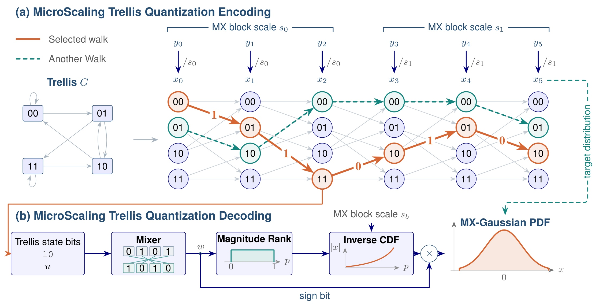
图 1 上半部分把同一输入在 Trellis 中的不同路径放在一起，实线和虚线只表示两条可选路径，不是两种语言模型。块尺度 s0 和 s1 标在上方，输入先被相应尺度归一化，再评价状态重构与目标的距离；跨过 MX 块边界后尺度改变，但状态链和累积代价继续。下半部分展示解码所需的环节：状态比特经过 Mixer，产生幅度排序与符号，经条件逆 CDF 映射得到可表示的重构值，再乘以尺度。需要注意这里的分布图是原论文自带的示意，并非测得的真实 KV 直方图。图的关键分工是，束搜索只发生在编码时，解码不重新搜索最优路径。实际保存的是压缩分支比特以及必要的起始状态信息；完整状态不是逐步原样存储。映射结果经过元素格式量化，所以它可供目标 MX 格式运算，这与先还原为任意高精度浮点数再参与注意力不同。图没有给出注意力内核的具体实现、硬件利用率或服务延迟，因此从这条信息流只能判断格式兼容关系，不能据此计算端到端加速倍数。从编码端看，图中的每个节点并不对应一个独立视频或历史事件，而是量化状态；原始缓存张量的分组边界和连续 token 的语义边界也不应混淆。状态窗口可并行恢复的是若干输出组的位模式，不是语言模型绕过因果依赖并行生成了后续 token。上方尺度边界还说明同一条路径能够经历不同块尺度，编码需要累计各块原域代价；下方保留下来的只有选定路径的可解码信息，没有把搜索期间所有假设持久保存。由此可以区分束宽对临时编码工作量的影响，与最终紧凑路径对持久存储量的影响。精确 Viterbi 搜索需要考虑大量状态，MiSTiQ 保留至多 B 个路径假设；每个假设保留末状态、累积误差和前驱索引，扩展所有合法后继，再选出全局较低代价的 B 个。原文式 4 与紧凑存储形式为：
符号解释：h 是已保留的路径假设，v 是其合法后继状态，J 是累积代价，B 为束宽。编码最后从最佳末路径回溯，得到分支标签；起始状态可从若干状态中选择，额外用 bstart 比特保存，每标量开销为 bstart/T。起始状态固定为零时无需该选择器。直接误差评价的复杂度随起始候选、步数、束宽和每步后继数变化，作者给出的量级为 O((2^bstart+(T/V−1)B)2^(kV))，另加候选选择成本；它降低保留搜索空间，同时放弃精确最优性。训练语言模型与量化编码也要分开：这里不是对模型参数做梯度更新，而是对已产生的缓存值执行有损编码。
2.2 MX-Hash 与尺度条件重构
MiSTiQ 让搜索直接评价最终 MX 重构值。对于块 b，目标值与重构值的原域误差对应原文式 5：
符号解释：x_b 是按已表示尺度归一化的目标，带帽 x_b 是元素网格上的重构向量，s_b 为本块尺度。尺度在块内不变，路径仍跨块连续。这个平方尺度因子说明，不能只比较归一化空间的误差就忘记原空间贡献；不同块的尺度不同，同样的归一化偏差会产生不同的绝对失真。作者先以高斯源数据为模型，求除以块尺度后的 MX-Gaussian 条件分布，再通过计算型 hash 将状态映射到该分布，不为所有状态存一个庞大显式向量码本。
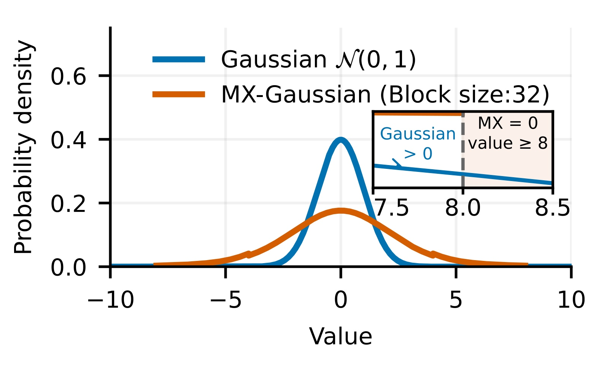
图 3 的横轴是数值，纵轴是概率密度，蓝线为标准高斯，橙线为块大小 32、E2M1 缩放条件下的 MX-Gaussian 边缘分布。橙线峰更平、尾部形状也不同，直接显示“已经处理成高斯”与“除以数据依赖尺度后仍是标准高斯”不能画等号。右上角小窗放大大幅值区域：普通高斯在那里仍有非零概率，而对应 MX 分布受到有限范围限制。这不是语言模型准确率图，也不证明某个块大小最优；它说明为什么普通 QTIP 映射在这里未必匹配需要重构的对象。作者的条件推导使用块尺度的可表示区间，以及其余坐标共同满足尺度选择条件的概率，因而能够把尺度信息引入映射。真实 KV 并不一定严格满足独立标准高斯，已有归一化和 Hadamard 处理只是让假设更可用。图也没有展示所有层、所有头的经验分布，因此它支持的是方法推导的动机，而不是已经验证跨模型普适性的结论。后续实验必须再检查这样的分布匹配是否改善实际模型质量，特别是极低位宽与格式改变时是否仍然成立。分布改变对设计的直接影响是，若重构映射仍把大量状态分配给归一化后几乎不会出现的尾部，就会浪费有限状态的覆盖能力；而中心附近的幅度又可能得不到足够分辨率。条件映射在这里尝试重新分配这种覆盖，并保留有限元素网格约束。它优化的是在给定尺度与分布假设下的重构点配置，没有判断某个 token 对答案的重要性，因此与语义重要性驱动的 token 删减属于不同方向，二者可能组合但本文未提供组合实验。为保留核心数学关系，原文式 6 的正幅度条件逆分布可以写为：
符号解释：a(s)、b(s) 是会被映射到尺度 s 的块最大幅度下、上界，d_mx 是块大小，P 是相应尺度区间事件的概率，p 是零与一之间的幅度分位，p* 为分段边界，erf 及其逆函数实现高斯概率映射。两个显示块共同解释同一个条件逆 CDF，分段并非人为增加两个量化器。这个表达要求相关概率和分母有效，附录给出条件分布推导；这里保留最终可复用关系，不抄写全部概率积分证明。它把“给定当前尺度，某个归一化幅度应出现多少”变成可计算映射，随后还要落到有限 MX 元素集合。状态本身也必须被打散，避免相邻比特模式带来过强输出相关。原文式 7—10 用逐坐标的 32 位 LCG 与 XOR、移位、乘法 Mixer 产生混合字，再拆成符号与幅度排序：
符号解释：u 为 Trellis 状态，A、C 与 Mixer 参数组成每个输出坐标的固定参数集 Ω，w 是混合后的无符号字，γ 为符号位，U 为幅度排序整数，p 是严格处于开区间内的概率。Mixer 的两轮乘法和 XOR 移位再加最终 XOR 移位，用于生成近似均匀的状态映射；它不是密码学安全性的论证。原文还在附录描述参数选择与查表实现，有限浮点近似需要单独评估。符号与幅度分开后，式 11 把条件分位数映射并量化到目标元素格式：
符号解释：h 是计算重构码的函数，Q_E 使用最近舍入、偶数平局处理和有限饱和，集合 Q_E 表示目标低精度网格。这一步让束搜索看到的就是最终可用的 MX 元素值，而不是先在连续空间选码再遭受一次未建模舍入。逐元素重构仍需尺度相乘，不能把约 1.25 的存储有效位宽误读成 attention 直接用 1.25 位标量乘法；存储码率与运算元素格式可以不同。
2.3 联合尺度搜索与 K/V 混合精度
固定参考尺度会限制路径选择，尤其当 UE5M3 或 NVFP4 的尺度网格允许更细调整时。作者把尺度放松为正连续变量，为每条候选路径重新拟合，并用相对完整块参考尺度的惩罚稳定短前缀。附录式 37—40 的核心为：
符号解释：m 是本 MX 块当前已处理的输出组数，a 是连续尺度，sref 是完整块提前得到的参考尺度，λ 控制前缀正则，φ 是可递增累积的内积。若前缀很短且不加惩罚，尺度可能轻易贴合一两个数而误导有限束的保留，随后却无法拟合整块。作者采用不随尺度改变输出码值的 clipped MX-Hash，使该目标对尺度保持二次形式，使用两个充分统计量增量求闭式解，再将尺度舍入并比较真实代价；块末设 λ 为零。这不是对全部离散路径和尺度的精确全局求解，有限束和尺度舍入仍可能剪掉更好的路径。
最后，Key 与 Value 不必使用相同载荷。增加 V 后，每步增加一位分支信息相当于每标量增加 1/V 位，因此可用更细粒度把预算向 Key 分配。本文在较高位宽设置使用 V=4，在较低位宽使用 V=8，并以实验检验这种取舍。相同 V 下编码成本仍受分支数和束宽影响；“更细分配”不是“增加 V 后所有指标都会提高”。主实验将 MiSTiQ 放入 NSNQuant 工作流，保留归一化与 Hadamard 变换，归一化发生在 RoPE 前，缓存量化位于 RoPE 后；附录另测试 VecInfer 集成。整条前处理、编码、存储、重构链路共同决定结果，换一个环节时不能默认为其余预处理都可删除。
3. 实验结果
3.1 实验对象、预算口径与高斯设计检查
主实验使用 Llama-3.1-8B-Instruct 和 Qwen3-8B，比较 VecInfer、NSNQuant 及替换其向量量化器后的 MiSTiQ。本文保留 NSNQuant 的归一化和 Hadamard 变换，基线按原描述实现后适配 MX 元素格式。大于两位的主设置采用块大小 32，NVFP4 为 16；不足两位时块大小为 128，作者解释较小硬件块可重复尺度来兼容较大块，但这种兼容方式不等于免费。默认状态位数 L=16，T=1024，束宽 128；高位宽 V=4、低位宽 V=8，UE5M3 和 NVFP4 使用联合尺度搜索。实验在 H100 上进行，一般每次一张 GPU，GSM8K 用四张。这里给出了运行设备，却没有给出完整在线 KV 编码、解码、attention 的延迟或吞吐对照，所以不能把硬件型号本身当成已实现对应低精度内核的证据。
“Effective Bit”包含载荷和实际保存的量化元数据，不只是分支信息。不同方法的 1.25 与 1.24、2.25 与 2.24 并非完全相同的存储预算；图和表能说明近似预算下的质量关系，不能无条件称为每一比特完全匹配。困惑度越低越好，LongBench 与 GSM8K 越高越好；LongBench 主表是七个任务的不加权平均，不是按请求量或 token 数加权的线上指标。两种模型的评估数值也不能直接相减来衡量某个模块，因为基础模型和任务行为不同。本文最稳妥的比较单位是：同模型、同格式、接近有效位宽、相同预处理协议的一组行。
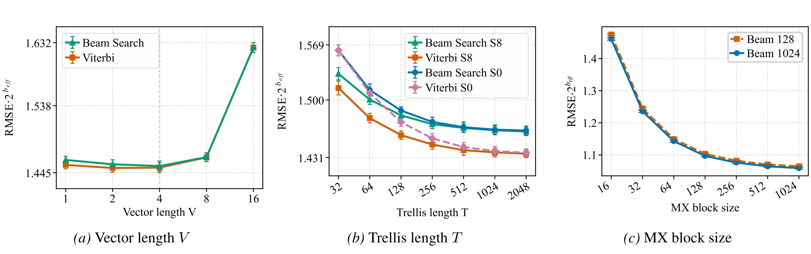
图 2 包含三组高斯合成输入上的控制实验。纵轴使用 RMSE 乘以有效位宽对应的指数因子，目的是减弱高码率理论中误差随位数下降的共同趋势；有效位数已计入载荷、尺度和起始状态，而不是只比较 k。左图改变每步输出的向量长度，V=4 附近较好，V=16 明显恶化，束搜索和 Viterbi 的趋势接近。它提示增加联合维度未必带来收益，固定状态位数与目标元素宽度共同限制有效映射。中图改变 Trellis 长度，并区分可选初始状态 S8 与固定起始状态 S0；长路径整体更好，但超过 1024 后边际变化变小，有限束与精确搜索之间仍有误差差距。右图在近似匹配码率下比较 MX 块大小，两个束宽的曲线接近，块变大带来的收益逐渐有限。三幅图都不是语言模型准确率或 GPU 时间测量，不能用来断言实际服务应无条件放大块或降低束宽。它们在给定高斯假设、码率统计和状态设计下帮助选择参数，实际 KV 的分布与质量仍要由后续两模型结果检查。
3.2 主结果与低位宽质量代价
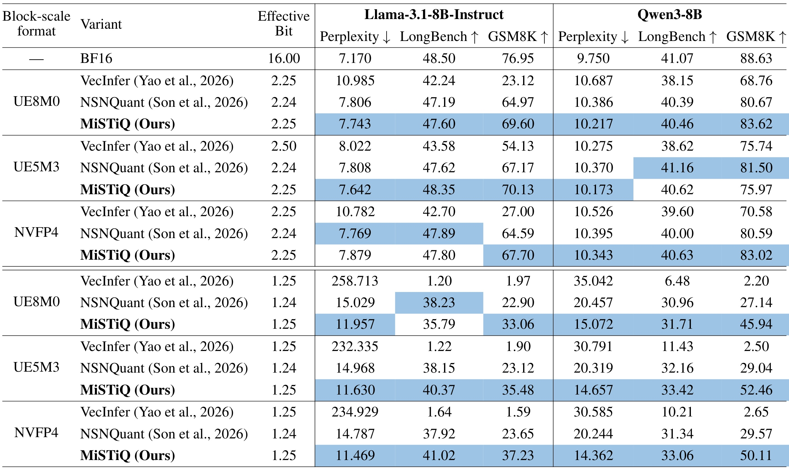
表 1 同时列出 PPL、LongBench 平均和 GSM8K，因此应该先按有效位宽分组，再看同一模型的三个质量切面。约 1.25 位的 NVFP4 设置下，Llama 的 MiSTiQ PPL 为 11.469，NSNQuant 为 14.787；GSM8K 从 23.65% 到 37.23%，是 +13.58 个百分点，但 BF16 为 76.95%，仍相差 39.72 个百分点。Qwen 对应 PPL 为 14.362 对 20.244，GSM8K 为 50.11% 对 29.57%，提高 20.54 个百分点，而 BF16 为 88.63%。这些比较证明它在非常紧的预算下更能保住质量，不能写成“低位量化几乎无损”。同一低位区间的 UE5M3 对 Qwen 推理更有利，GSM8K 达 52.46%，高于 NVFP4 的 50.11%；格式选择也依赖目标指标，不能只固定一个宣传数字。
主表里存在明确反例。低位 UE8M0 的 Llama LongBench 为 35.79，低于 NSNQuant 的 38.23，虽然它的 PPL 和 GSM8K 都更好。较高位 UE5M3 的 Qwen GSM8K 为 75.97%，NSNQuant 为 81.50%，下降 5.53 个百分点；该组 LongBench 也为 40.62 对 41.16。较高位 NVFP4 的 Llama PPL 为 7.879，对照为 7.769，LongBench 为 47.80 对 47.89，也没有全项胜出。摘要说 NVFP4 在两个模型的 LongBench 平均均最佳，但主表约 1.25 位时 Llama 的 NVFP4 为 41.02、UE5M3 为 40.37，Qwen 的 NVFP4 为 33.06、UE5M3 为 33.42；正文又写 UE5M3 在两模型均最高。本笔记保留这些原始数值，说明摘要、正文概括与表格之间不完全一致，不选择其中一个概括覆盖实际行列。另一个口径差异是主表 UE5M3 的高位 VecInfer 写为 2.50 位，附录逐任务表对应设置写为 2.25 位，相关对照也需要作者进一步澄清。高位与低位之间还呈现不同的实际选择空间：预算较宽时，多种方法的语言建模误差已接近，微小差值更需要重复运行或不确定性估计；预算极紧时，误差足以改变整段推理轨迹，更大的相对领先也可能仍远低于未量化参考。表里没有给出逐指标置信区间，因此对于接近的单元格，应陈述显示数值和方向，不能补写显著性结论。
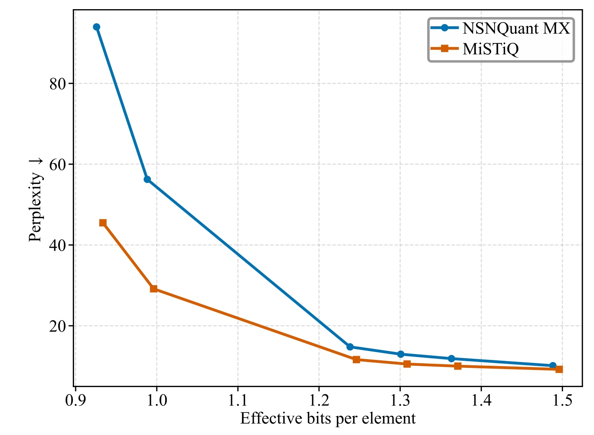
图 4 把 MiSTiQ 和 NSNQuant 的 PPL 放在逐步降低有效位宽的横轴上，展示约一位附近质量会快速恶化，而不是出现一个“达到某位数就仍保持原质量”的平坦区域。MiSTiQ 曲线在比较区域内较低，尤其不足一位时差距更明显；但两条曲线自身都随着预算收紧大幅上升，绝对质量损失不能被相对领先掩盖。这里使用 V=4 的 MiSTiQ 设置，NSNQuant 通过调整 Key/Value 码本大小改变预算，所以它不是把 Table1 所有格式合成的统一曲线，更不是把同一缓存无损换一种打包方式。读图时应比较接近的有效码率，关注整条质量成本曲线，而不是任意取不同位宽两点相减。由于没有对应的编码时长、读带宽或 attention 墙钟曲线，该图也不能说明在一位附近质量下降换来了多少实际每秒请求数；它支持的是重构方案在存储约束下的质量优势及退化边界。纵轴的非线性变化也提示，存储预算的等额减少不保证质量损失等额增加。在极低码率区域，少量额外载荷可能帮助路径避开严重失真的重构，而在较宽预算附近边际变化较小；图中只有所测设置，不能继续向更低码率外推一条直线。
3.3 设计消融、向量长度与键值预算
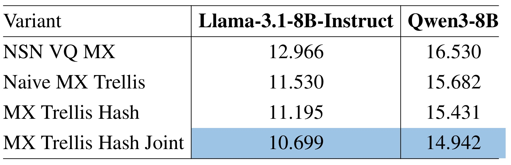
表 2 在约 1.30 有效位、UE5M3 尺度下比较设计链，因而数值不能与主表 1.25 位设置逐行拼接。Llama 的 PPL 从 NSN VQ MX 的 12.966，降到先 Trellis 再转 MX 的 11.530，加入 MX-aware hash 后为 11.195，联合尺度搜索进一步到 10.699。Qwen 对应为 16.530、15.682、15.431、14.942。四行说明主要初始收益来自更强的 Trellis 表示，而把最终元素网格纳入映射、再联合调整尺度还能继续降低误差。它没有给出每一步在同一硬件上的运行时间，不能用质量改善幅度反推成本占比。近似预算匹配也是重要限定：相同“约 1.30”并不自动保证所有起始状态、块尺度和载荷结构一样。表头只列模型名，PPL 的含义由原 caption 指定，本笔记按 caption 解释，未修改原图补画指标。把这一表与主表联合看，可以相信方法构成具有连续贡献，同时仍需承认不同模型、格式与任务上的收益并不一致。从这条消融链能较清楚地判断，联合尺度并不是简单在已有输出上乘一个事后最优常数。前缀路径在搜索过程中已经因为新的尺度拟合而改变保留顺序，因此它和固定码再重标定的比较对象不同。另一方面，表中每次只展示一种逐步扩展后的配置，没有完整交叉所有束宽、向量长度和尺度精度，也没有分别对每个阶段扫描同等搜索成本。故它提供的是当前实现下的构成证据，不能分解成可跨配置相加的几个固定百分点。尤其 PPL 是指数化的语言建模指标，绝对差值不能像线性收益一样直接相加解释为准确率的贡献；两模型的同向趋势比虚构各模块独立业务增益更有意义。
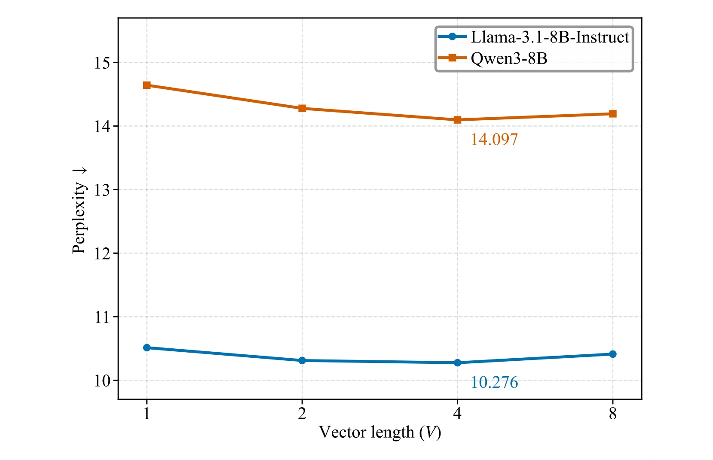
图 5 固定 UE5M3、dmx=128、T=128 与每标量一位 Trellis 载荷，分别观察两模型的 PPL 随 V 改变的趋势。两条曲线在 V=4 最低，图中标出的数值分别为 Llama 的 10.276 和 Qwen 的 14.097；到 V=8 都略微回升。这个设置与主实验 T=1024 不同，不能把图中最低数值直接作为主表的替代。它回答的是固定统一载荷下，状态一次产生多少标量更合适。V 较大并不意味着码本形状总更好，计算型映射、有限状态和输出相关性也一起改变。作者在低位宽主设置使用 V=8，并非否认这张图，而是利用更大的 V 获得更细 K/V 位数分配；因此选型要把“均匀分配最优”与“允许非均匀分配后的总预算最优”分开。图没有测试所有模型、T 和束宽的笛卡尔积，不能把 V=4 解读成架构无关常量。两条曲线的绝对数值不同，但最优位置相近；这可以作为当前默认参数的经验依据，仍不意味着误差来源完全相同。图中的转折同时受每步输出维度和有限状态表达能力影响，未分别隔离这些因素，因此作者对状态位与元素位宽关系的解释应保持为假设。
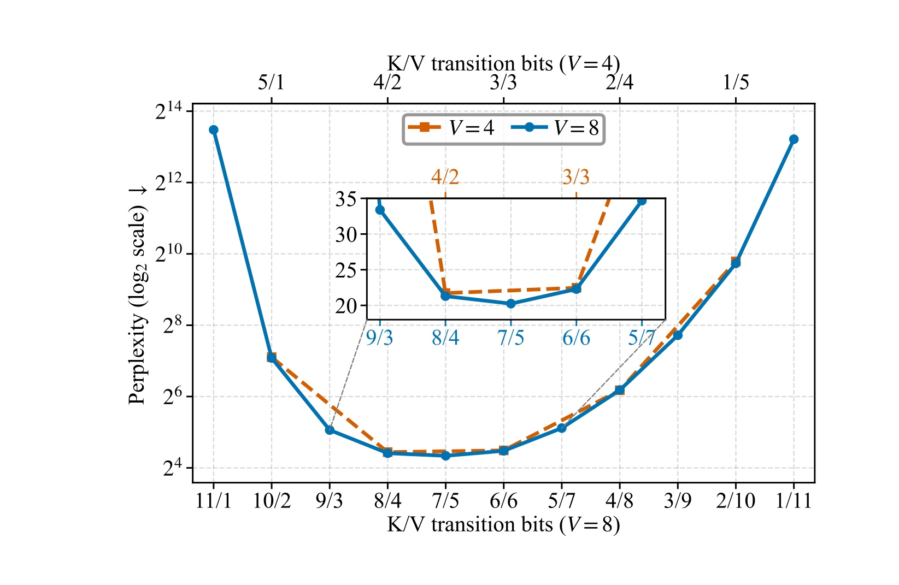
图 6 在 Llama、UE5M3、dmx=128、T=1024 下改变 Key 与 Value 分支位数，纵轴为对数尺度的 PPL，并用嵌入小窗放大较好区间。下方坐标对应 V=8，上方对应 V=4，两套标签是不同步长下的分配，不能把“7/5”理解为缓存每个 Key、Value 分别固定七位和五位。每步生成 V 个数，所以分支位数还要除以 V 才能得到相应每标量载荷，并另计元数据。结果呈 U 形：Value 分配过低或 Key 分配过低都会严重退化，较优位置偏向给 Key 更多预算。V=8 使可选分配更细，在有限预算下找到更合适的折中，而非所有候选都优于 V=4。图支持 Key 对量化更敏感这一经验，并显示这种敏感性需要联合比较；它只针对一个模型和这里的预处理配置，不证明任意层、任意上下文都可使用同一比率。服务实现还必须考虑额外格式分支和编码开销，本文没有把这些工程成本量化出来。需要进一步区分横轴的分支位数组合与表中的平均有效存储位数：前者描述两条编码路径的载荷分配，后者还要计入尺度、起始状态以及实际打包统计。若只把横轴两数相加来估算完整显存，会遗漏这些部分，也无法与主表预算直接对齐。
3.4 附录中的快速映射、极限码率与跨工作流集成
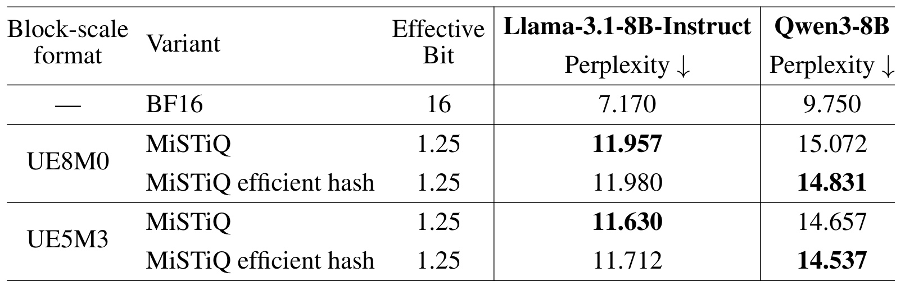
表 3 比较原始 MiSTiQ 与高效 hash 近似，全部约为 1.25 有效位。UE8M0 下，Llama PPL 从 11.957 变为 11.980，略微恶化；Qwen 从 15.072 变为 14.831，反而更好。UE5M3 下也呈相反方向，Llama 从 11.630 到 11.712，Qwen 从 14.657 到 14.537。附录使用预计算系数和共享逆 CDF 查找来简化映射，并提供浮点插值误差分析；原 Figure7 属于这种数值误差诊断，本笔记在全量审计中保留其编号与具体省略理由，不将其误作语言模型实测性能。表 3 能说明高效近似没有造成同量级质量崩溃，却不能证明严格等价，也不能给出实际加速倍数，因为表中没有耗时列。两模型方向不同还说明数值近似误差与最终 PPL 之间不是单调的一对一关系，不能仅以某个局部误差阈值保证所有下游任务不退化。值得注意的是，两行 UE8M0 与两行 UE5M3 使用的尺度处理并不相同：前者以初始尺度为主，后者使用联合搜索。高效映射的比较因此要在每个尺度格式内部进行，不能把不同格式两行的差异全部归因于查表。附录还讨论逆误差函数的插值、有限区间和不同精度算术，对落在表外的参数保留完整逆分布处理；这意味着简化实现仍有边界分支，不是所有状态都只做一次同样查表。对于真正内核，表大小、读取模式和异常分支是否抵消算术节约需要实际计时。当前结果适合说明近似质量大体保留，以及少量扰动可在不同模型上产生不同方向的变化；它没有保证每个 token 的重构严格相同，也没有提供逐任务近似后的全量对照。
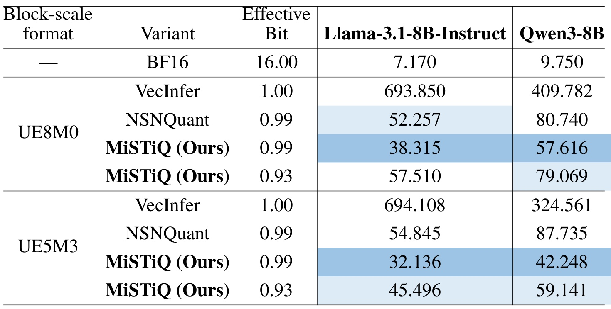
表 4 把预算进一步压到一位以下，数值展示的是 PPL，模型名是原始表头，指标由 caption 与正文定义。UE5M3 的 MiSTiQ 在 0.99 有效位时，Llama/Qwen 分别为 32.136/42.248，低于约 0.99 位 NSNQuant 的 54.845/87.735；压到 0.93 位后，又恶化到 45.496/59.141。UE8M0 下，0.99 位为 38.315/57.616，0.93 位为 57.510/79.069。它证明方法可以在更低存储预算下仍比某些对照的较高预算更好，但不代表这些输出已经达到可接受服务质量：BF16 的 PPL 为 7.170/9.750，绝对差距很大。表使用动态存储统计口径，不能只看名义分支位宽；对于完全相同有效位数、同一格式和同一模型的比较，结论最清楚。更低预算会同时改变载荷比例与误差形状，是否值得需要由应用容错决定，而非看到“小于一位”就判断是理想部署点。还可以沿同一格式观察预算变化，而不是只横向选一个最有利对照。两种格式从较低预算移到更低预算时，MiSTiQ 的 PPL 都明显上升；UE5M3 在两档里优于 UE8M0，但这种优势依赖更细尺度和联合拟合所用的条件。若未来只支持另一种硬件尺度格式，不能假定可以保留这里最好的数字。表中没有给出不足一位条件的 GSM8K 或完整长上下文评测，因而即使语言建模指标领先，也不能断言生成推理仍然稳定。PPL 的上升可能对输出产生怎样的实际影响，需要具体任务检验；本表本身只能说明概率预测误差。将这一极限结果定位为编码能力边界，比把它当成部署推荐点更符合现有证据。
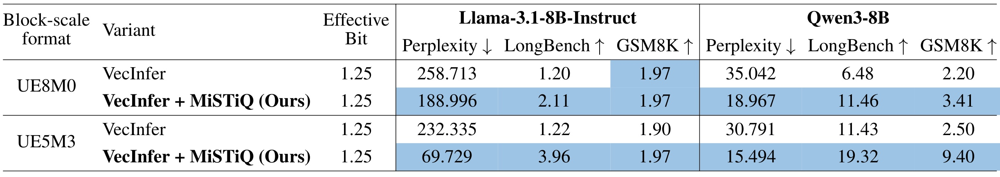
表 5 是可插拔性的额外检查：保留 VecInfer 的预处理，只把其向量量化器换成 MiSTiQ，约 1.25 有效位。UE5M3 下，Llama PPL 从 232.335 降到 69.729，LongBench 从 1.22 到 3.96，GSM8K 从 1.90% 到 1.97%；Qwen PPL 从 30.791 到 15.494，LongBench 从 11.43 到 19.32，GSM8K 从 2.50% 到 9.40%。这些改进方向大体积极，但 Llama 的绝对任务质量仍很低。UE8M0 的 Llama GSM8K 为 1.97% 对 1.97%，在显示精度下是平局，因此附录文字“所有设置都更高”的概括不能覆盖这个例外。与主实验 NSNQuant 流程相比，集成后的表现仍差很多，说明效果不仅由 Trellis 量化器决定，前处理与分布塑形的配合也重要。该表支持“接口上能够替换”的经验，不支持“换到任意工作流就能获得主表质量”，更不等价于一个通用低精度服务已经完成数值验收。这组绝对质量差异还有助于定位模块作用。换量化器能挽救一部分原工作流在极低位宽的失真，但当预处理后分布与编码映射的配合不理想时，单一更强编码器并未恢复主要任务能力。比如 Llama 的困惑度虽然大幅下降，推理准确率仍接近很低水平，说明改善语言建模指标与恢复可用推理之间可能有较大间隔。作者没有进一步把归一化、平滑、旋转及量化顺序全部交叉消融，所以这里只能指出这种依赖，不能指定某一个前处理步骤就是原因。复现时要把替换前后的设置固定下来，优先确认相同 RoPE 位置和分布处理，而非拿两条不同工作流的结果当成纯量化器因果对照。
3.5 LongBench 均值背后的逐任务反例
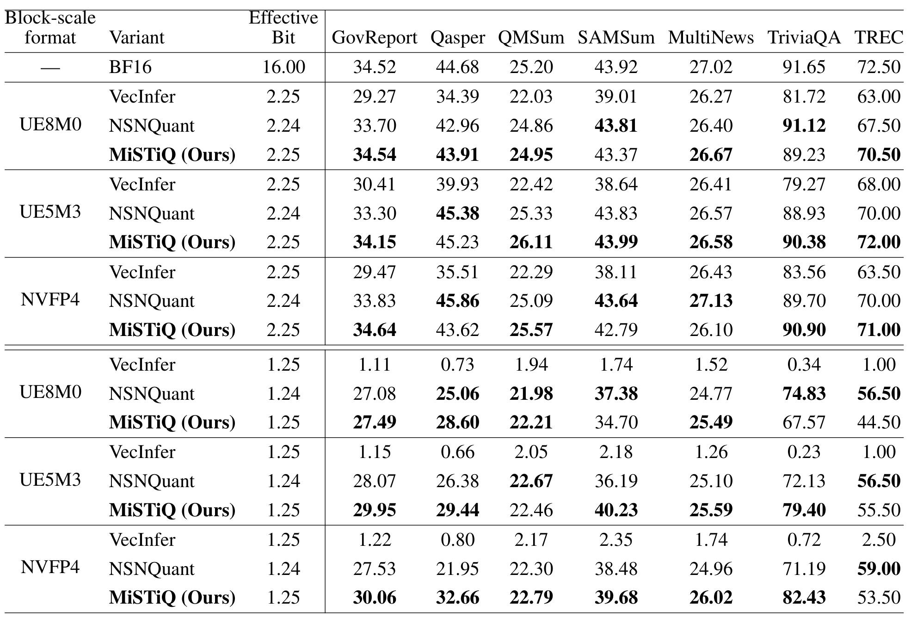
表 6 把 Llama 的七任务平均拆为 GovReport、Qasper、QMSum、SAMSum、MultiNews、TriviaQA 与 TREC。约 1.25 位 UE8M0 下，MiSTiQ 在 Qasper 从 NSNQuant 的 25.06 到 28.60，也在 GovReport、QMSum、MultiNews 略好，但 SAMSum 从 37.38 降到 34.70，TriviaQA 从 74.83 降到 67.57，TREC 从 56.50 降到 44.50。这些较大退化足以解释为什么它在该组平均分更低，即便困惑度更好。NVFP4 低位设置里，多数任务上升，TREC 却从 59.00 到 53.50；所以“更好的平均”也不等于覆盖所有任务。较高位的若干摘要得分接近 BF16，个别甚至略高，但 BF16 是表中历史参考，不能把小幅超出解释成压缩改善了模型真实能力。该表的价值在于把误差定位到任务类型，而不是把平均分改写成通用无损声明；对应用选型应保留其真正依赖的任务切面。进一步看这些变化，并不是所有长文任务都沿着同一个方向反应。摘要类任务本身就出现一升一降，问答任务之间也有差异，说明不能仅按任务大类给所有应用统一选择格式。分类任务的样本量和打分离散性也会影响显示值，但原表没有提供重复试验区间，不能靠几分高低断言稳定能力排序。对于一个主要依赖检索式问答的服务，平均分被其他摘要项拉高并不能抵消其特定任务退化；同理，若服务不使用分类能力，分类分数下降也不应单独否定全部场景。这里需要的是按实际负载定义验收集合，并同时保留未量化参考，而非事后从七任务挑选有利一列。本文给出逐项数据，使这种后续判断成为可能。
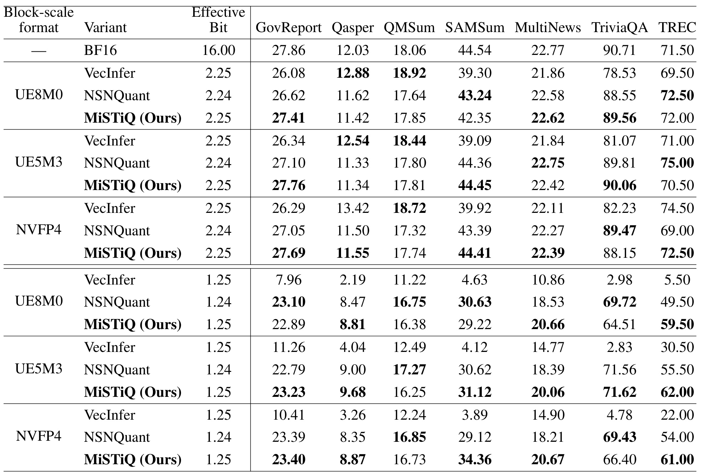
表 7 使用同样七任务定义看 Qwen，仍能看到有升有降。约 1.25 位 UE5M3 下，MiSTiQ 的 TREC 为 62.00，对照 55.50，Qasper 为 9.68 对 9.00，但 QMSum 为 16.25 对 17.27；NVFP4 下 SAMSum 从 29.12 到 34.36、TREC 从 54.00 到 61.00，而 TriviaQA 从 69.43 降到 66.40。较高位 UE5M3 的 TREC 也由 75.00 降为 70.50，因此平均表不应替代单任务判定。该表 caption 还明确说明 UE8M0/UE5M3 的 VecInfer 使用 MX-unaware 量化，NVFP4 保留原设置，所有 MiSTiQ 行束宽为 128；这些实现差异应与主文“适配 MX”概括一起阅读。不同格式中的 VecInfer 行不能被当成仅改变尺度类型的完全同构实现。两个逐任务表共同表明，本方案对低位缓存的质量保持具有实质价值，但适用任务、格式与基础模型都影响收益，迁移时必须重新绘制目标任务的质量成本曲线。与前一模型相比，Qwen 在若干低位设置的分类增益更明显，而开放问答并不总是同步改善。这说明“Key 更敏感”的总体设计原则仍不足以预测每一任务的最终排名，基础模型的误差传播、生成路径和任务输入都可能参与影响；本文没有通过机制实验逐一确认这些解释，不能将其写成已证明原因。两张附录表使用相同列定义，读者可以稳定区分同模型内比较和跨模型参考，但不能把模型间不同的 BF16 起点消去后就认为得到纯量化器的通用效应。对于还需维护语言风格、细粒度事实或个性化约束的应用，现有七任务也不是完整质量清单，后续仍需增加对应留出评测。
4. 总结
MiSTiQ 最值得保留的贡献，是把紧凑的存储编码、可计算的重构分布和目标低精度网格一起设计。Trellis 扩大可选重构空间，束搜索限制编码时保留的候选，MX-Hash 把尺度条件分布与元素舍入纳入搜索，联合尺度搜索进一步改变每条路径的评价，K/V 分配则利用更细的分支粒度调节误差。这几步相互连接，不能简化成“用一个更好的码本”。消融表提供了相应精度证据，主表与附录又说明更强的重构并非每个任务都受益，因此本文是一组有明确条件的低码率质量改进，而不是对所有服务的统一加速承诺。
对推荐系统中使用长用户历史的内容理解、检索重排模型，直接启发是先区分保存的状态、读取状态所需的重构以及真正参与点积的数值格式。如果压缩只减少持久缓存，解码时却建立大块高精度临时张量，峰值显存和带宽节省会与名义码率不同。本文没有给这些临时张量做服务级测量，读者需要把它当作验收问题保留。另一个可迁移点是预算不必均匀分配：Key/Value 的不同敏感性提示可以寻找任务相关的误差配置，但应以实际候选排序、回答质量或用户指标验证，不能把 GSM8K 的最优比率直接移植到推荐模型。
局限至少有五项。第一，源分布的高斯近似与块条件推导依赖前处理，异常值、层间差异和新模型可能改变适用条件。第二，有限束搜索和离散尺度舍入不保证全局最优，编码成本也未通过完整内核时间表量化。第三，主实验证据只有两款八十亿参数模型，缺少更大模型、不同注意力结构和真实多并发负载的对照。第四，极低位数仍有显著绝对质量损失，任务之间存在明确反例，不能用相对基线领先掩盖。第五，摘要、正文与表格对最佳格式以及部分预算的概括不完全一致，当前代码又尚未核验公开，复现者需要作者确认精确设置和实现版本。从方法关系看，本文也没有比较语义保留与数值失真的优先级：编码目标是原域平方误差，并不直接感知某些小幅数值变化是否会改变关键注意力排序。更低 PPL 与某些长任务退化并存，正好说明最终目标不能只由一个重构误差代理替代。今后若引入注意力或任务相关权重，应作为新的目标设计重新控制实验，不能把它提前归入 MiSTiQ 已有贡献。对于作者提出的权重量化延伸方向，也应记住权重可离线搜索、缓存需持续编码，两者对束宽和时间开销的容忍度不同。
后续最有价值的三步是：先等待并固定官方量化代码与配置，复算有效位数、起始状态、尺度存储和两表中的位宽差异；再在同模型、同上下文、同 batch 下同时测缓存写入、解码、attention、峰值显存、吞吐和质量，确认格式兼容是否转化为实际收益；最后按真实目标任务做同质量成本比较，保留逐任务负例及较高位宽对照，而不是只复现最极端码率。还应增加原始分布诊断，检验取消或更换前处理后 MX-Hash 是否仍然匹配。本文提供了值得尝试的编码构造，是否进入线上链路，需要这些完整而可对照的证据继续支撑。